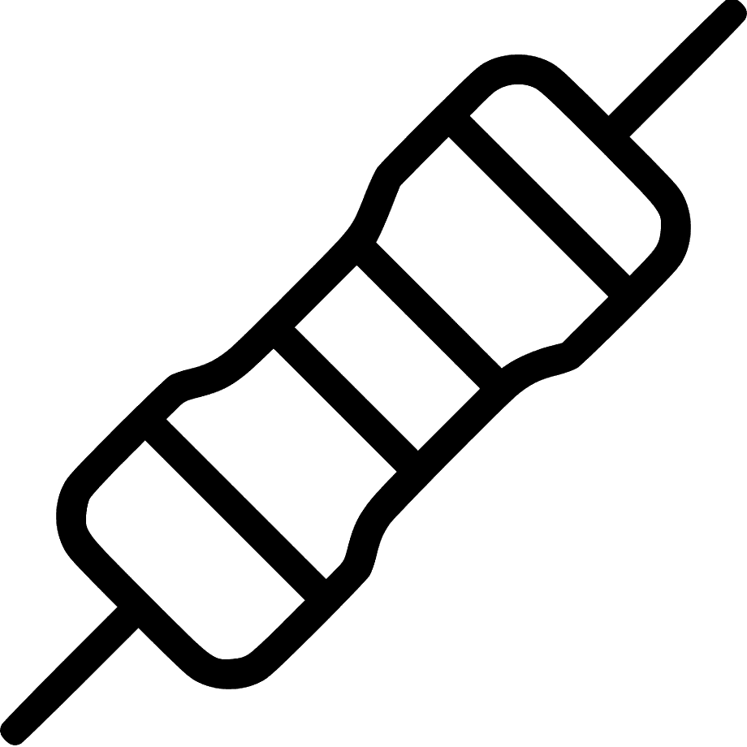

特色
- 传感器平台
- 开发的平台可以方便地和各种传感器以及执行器交互，让交互过程变得简单和轻松。
-

- 文档资源
- 用视频和文档的形式记录每个实验，用最直观的方式理解传感器。
- 传感器支持
- 平台支持不同种类的传感器，丰富的传感器等待我们的探索。
- 
- 快速理解电子世界
- 除了理解传感器外，平台和实验也帮助你快速掌握电子电路。
用简单轻松的方式带你理解电子世界！
你想知道遥控器是怎么控制电视机的吗？体重称是怎么称体重的吗？ 我们是怎么控制LED灯发出不同颜色的光？声音又是如何产生和记录的？等等。
"传感器实验室"将用最易理解的方式带你解答这些问题。 我们的世界充满了各种各样有趣的电子传感器和执行器， 让我们一起来探索并控制它们吧！
点击“实验”按钮进入传感器实验页面，每个实验用文字和视频的方式带你理解传感器和它的控制原理。
每个实验基于我们研发的平台，平台可以帮助更方便简单地和每个传感器进行交互。可视化传感器的数据并更容易地搭建出可以用在生活中的产品。点击“平台”按钮了解更多平台的工作方式。
如果您对我们的实验或者产品有任何问题，请通过“联系”按钮联系我们，我们会第一时间回复您的问题。。